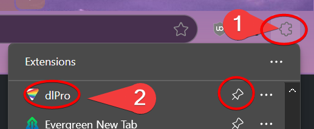
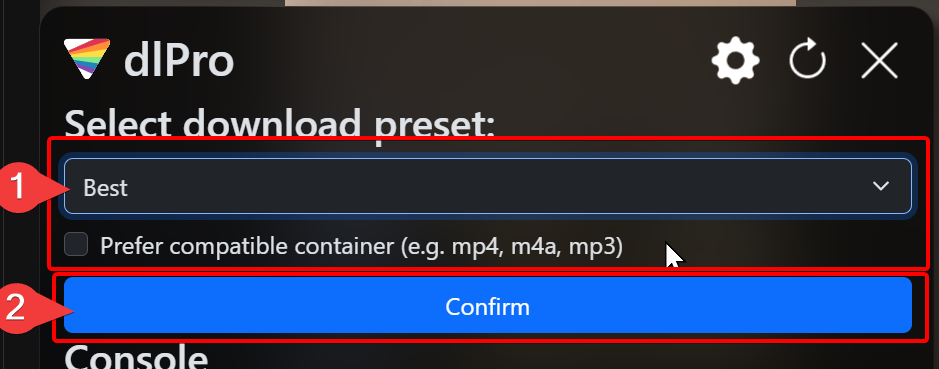

dlPro
dlPro
Welcome to dlPro!
How to use:
Navigate to the page you want to download
-
Click the dlPro icon (it may be under the "extensions" button that looks like a puzzle piece)

Pro-tip: click the "pin" 📌 icon to make the dlPro icon always visible at the top!
-
Select your download preset and click confirm
